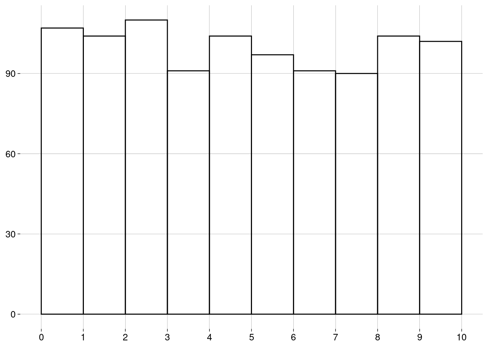

Capítulo 6 Medidas
6.2 Medidas de centralidade
6.2.1 Média
-
A média de uma população é escrita como \(\mu\), e é definida como \[\mu = \frac{\sum x}{N}\]
\(\sum x\) é a soma de todos os dados \(x\) da população.
\(N\) é a quantidade de elementos na população.
-
A média de uma amostra é escrita como \(\bar x\), e é definida como: \[\bar x = \frac{\sum x}{n}\]
\(\sum x\) é a soma de todos os dados \(x\) da amostra.
\(n\) é a quantidade de elementos na amostra.
O cálculo é essencialmente o mesmo. Só mudam os símbolos: \(N\) versus \(n\), e \(\mu\) versus \(\bar x\).
6.2.2 Mediana
Já aprendemos sobre a mediana na seção sobre boxplots.
A idéia é que, depois de ordenar os dados, \(50\%\) dos dados estarão à esquerda da mediana, e \(50\%\) à direita.
A mediana não é tão sensível a outliers quanto à média.
6.2.3 Moda
A moda é o valor mais frequente do conjunto de dados.
Pode haver mais de uma moda.
Por que não existe uma função para a moda em R base? Porque, por incrível que pareça, é complicado definir a moda de forma a conseguir resultados interessantes.
-
Vamos definir um conjunto de \(1000\) valores numéricos distribuídos normalmente3, com média igual a \(5\) e desvio padrão4 igual a \(2\):
normal <- rnorm(1000, mean = 5, sd = 2) -
Eis uma função para retornar um histograma com divisões nos valores inteiros:
-
O histograma dos nossos dados é
normal %>% histograma()
-
Vamos calcular a moda com a função
mfv(most frequent value), do pacotemodeest:## Registered S3 method overwritten by 'rmutil': ## method from ## print.response httr# Por causa de um bug na função mfv, # precisamos de números com ponto decimal # (em vez de vírgula): options(OutDec = '.') mfv(normal)## [1] -0.80084517 -0.69596861 -0.64246912 -0.41850770 -0.38587538 -0.21177625 ## [7] -0.05543962 -0.01061090 0.03084806 0.03955691 0.05777354 0.47346671 ## [13] 0.64274899 0.71914300 0.75276876 0.79430716 0.80923183 0.87530758 ## [19] 0.94074045 0.95307184 1.00050995 1.00600109 1.01529559 1.09501788 ## [25] 1.10146473 1.11874825 1.12909646 1.13105512 1.13933331 1.16343687 ## [31] 1.21322190 1.24733137 1.25080836 1.30445725 1.34947610 1.39315001 ## [37] 1.41450447 1.41719674 1.42756366 1.50135119 1.51276997 1.53256440 ## [43] 1.55136377 1.58265727 1.69537442 1.73528254 1.76337411 1.76379175 ## [49] 1.77172984 1.79848911 1.82895941 1.85410578 1.86254869 1.87309661 ## [55] 1.87641596 1.87726961 1.89052353 1.89320505 1.93452686 1.93511386 ## [61] 1.95695809 1.95986384 1.97093893 1.99226035 2.05168545 2.06474137 ## [67] 2.10669095 2.14334362 2.17990743 2.18869856 2.20738327 2.20756816 ## [73] 2.22315123 2.22458631 2.22735284 2.23258938 2.23354114 2.25536992 ## [79] 2.28204975 2.33323231 2.38867141 2.39244496 2.39753722 2.40468036 ## [85] 2.41290561 2.41709620 2.43146660 2.43937498 2.45579529 2.45912954 ## [91] 2.47116766 2.49848621 2.51871398 2.54568083 2.57190828 2.58399483 ## [97] 2.58934846 2.60017463 2.60189548 2.60606442 2.62007790 2.63420941 ## [103] 2.63822829 2.64405333 2.64729496 2.64911936 2.65831474 2.66607450 ## [109] 2.66874420 2.66954889 2.68823097 2.69099117 2.69349796 2.69672371 ## [115] 2.69895015 2.70781572 2.71144696 2.71412543 2.72444876 2.73581958 ## [121] 2.75821994 2.77187913 2.77313956 2.77759385 2.78256713 2.78819756 ## [127] 2.78936397 2.81912640 2.82233462 2.82524366 2.84250785 2.85426941 ## [133] 2.85806659 2.90686344 2.90761351 2.90935919 2.91668142 2.92286313 ## [139] 2.93591866 2.94807620 2.95059926 2.96691306 2.98553095 2.98789178 ## [145] 2.99088302 2.99213868 3.00308241 3.00990864 3.01413717 3.01948426 ## [151] 3.03415019 3.03656779 3.04349861 3.04395459 3.05045758 3.05143584 ## [157] 3.05186138 3.06563104 3.07829733 3.08736055 3.09593419 3.09756505 ## [163] 3.09777257 3.10826627 3.11334355 3.12033909 3.12504726 3.13520311 ## [169] 3.13555453 3.14149056 3.15036715 3.15175736 3.15265368 3.18819215 ## [175] 3.18877868 3.19356958 3.20958197 3.21001234 3.22714674 3.23945916 ## [181] 3.24085361 3.24523103 3.25414934 3.26879468 3.29194530 3.29249433 ## [187] 3.29682016 3.29692505 3.30011423 3.31015223 3.32041078 3.32209305 ## [193] 3.32234068 3.32843787 3.33642740 3.33995596 3.35125909 3.36326749 ## [199] 3.36416239 3.36835999 3.37893631 3.37945979 3.39529318 3.40619209 ## [205] 3.41188777 3.42025159 3.42722765 3.44197203 3.45989590 3.47214504 ## [211] 3.48940577 3.49133529 3.49592342 3.51389250 3.51595100 3.52093002 ## [217] 3.52977543 3.53951114 3.54542186 3.55083227 3.55552854 3.55640256 ## [223] 3.56115046 3.56618381 3.56796502 3.57377271 3.58403740 3.58682782 ## [229] 3.59547519 3.60164165 3.60538652 3.60565354 3.61404976 3.61855846 ## [235] 3.62312487 3.62824059 3.63468918 3.63614575 3.63881056 3.65265789 ## [241] 3.65363922 3.65390693 3.65422123 3.66528955 3.66876802 3.66971279 ## [247] 3.67859046 3.69050682 3.70195660 3.70499032 3.71002512 3.71250994 ## [253] 3.71570869 3.72418782 3.74042649 3.75531978 3.76445174 3.76931038 ## [259] 3.77001755 3.79414219 3.79788920 3.80116256 3.80342913 3.80985103 ## [265] 3.81044301 3.81334910 3.81799101 3.83358236 3.83552207 3.85550729 ## [271] 3.85704306 3.86262303 3.88616028 3.90018529 3.90119879 3.90407971 ## [277] 3.90839794 3.91535686 3.91592445 3.91947390 3.92191854 3.95400113 ## [283] 3.95590633 3.95630697 3.96449667 3.97570697 3.97614313 3.98114687 ## [289] 3.98135086 3.98432434 3.99599669 3.99752525 4.00064158 4.00096582 ## [295] 4.00167358 4.01593928 4.01691082 4.02745012 4.03611285 4.04047601 ## [301] 4.05159951 4.06155798 4.06753736 4.06902906 4.07868110 4.08961058 ## [307] 4.09490510 4.09764340 4.09787223 4.10095745 4.11087496 4.11995608 ## [313] 4.12110786 4.12200269 4.13401866 4.13585368 4.13812519 4.14402550 ## [319] 4.14895093 4.14955448 4.15283906 4.15290128 4.15696045 4.15788380 ## [325] 4.15999473 4.16907520 4.18035325 4.18133930 4.18814998 4.18998610 ## [331] 4.19780840 4.20033881 4.20127057 4.21293622 4.21869423 4.21977379 ## [337] 4.22344359 4.22520860 4.23595116 4.24405629 4.25128320 4.26790843 ## [343] 4.27091206 4.27594646 4.27707278 4.29010213 4.29139366 4.29292086 ## [349] 4.29337547 4.29871257 4.29884655 4.29965162 4.30821056 4.30947678 ## [355] 4.31013852 4.31946397 4.32300166 4.32539268 4.32602387 4.35590132 ## [361] 4.36026423 4.36518142 4.37388143 4.38128088 4.38529240 4.38763191 ## [367] 4.38788312 4.39042813 4.39465361 4.40510965 4.40977979 4.41037476 ## [373] 4.41338385 4.41515895 4.42196450 4.44130749 4.44180356 4.44541846 ## [379] 4.45313597 4.45975859 4.45977528 4.46701010 4.47110990 4.47997692 ## [385] 4.49498273 4.49545753 4.50272964 4.50398598 4.51227965 4.54209801 ## [391] 4.55771390 4.57521530 4.59355564 4.60096320 4.60888424 4.61122347 ## [397] 4.61417589 4.61721332 4.62159445 4.62918558 4.63209180 4.63862708 ## [403] 4.64014686 4.64341469 4.64346680 4.64462442 4.64741913 4.66725983 ## [409] 4.67251504 4.67519205 4.68279032 4.68487431 4.69088640 4.69128282 ## [415] 4.69332532 4.70080422 4.70233036 4.70660254 4.70721671 4.70863465 ## [421] 4.71382612 4.72582194 4.72919318 4.73860284 4.74122279 4.74281483 ## [427] 4.74896405 4.75214332 4.75739847 4.76296193 4.76957200 4.77659256 ## [433] 4.77901359 4.78079117 4.79303698 4.79588597 4.79667381 4.79673945 ## [439] 4.80250356 4.80557252 4.80905719 4.80975660 4.82318923 4.83240619 ## [445] 4.83524933 4.83902445 4.84123247 4.84134836 4.84301682 4.85173215 ## [451] 4.85932468 4.86377225 4.86384856 4.86635694 4.87169796 4.87196176 ## [457] 4.87487144 4.87543566 4.87560704 4.87862889 4.87901160 4.88101919 ## [463] 4.88254070 4.89121940 4.89161529 4.89419684 4.90324614 4.91099611 ## [469] 4.91295484 4.92286568 4.92453070 4.93068596 4.94100499 4.94264285 ## [475] 4.94673262 4.94887781 4.95946785 4.96465107 4.96467269 4.96854192 ## [481] 4.97461972 4.97745433 4.98083862 4.98289649 4.98448301 4.99054277 ## [487] 5.00041649 5.02241836 5.04159444 5.04945503 5.05180803 5.05657968 ## [493] 5.05992398 5.06347351 5.06456610 5.06558414 5.06820911 5.06823608 ## [499] 5.08848553 5.10582376 5.11549307 5.11686838 5.12080607 5.12646801 ## [505] 5.12654769 5.12919823 5.13242877 5.13475924 5.13594389 5.13811670 ## [511] 5.15350305 5.15376589 5.15516959 5.16582707 5.17072679 5.17445452 ## [517] 5.18040055 5.18135674 5.18139224 5.18252340 5.19170400 5.20343603 ## [523] 5.21298439 5.21493200 5.21680965 5.21723910 5.22019811 5.22082518 ## [529] 5.22896296 5.24142556 5.24254993 5.24758590 5.25046293 5.25429975 ## [535] 5.25603719 5.25996539 5.26800588 5.27301545 5.27351715 5.27518483 ## [541] 5.27861390 5.28005129 5.28260316 5.28791302 5.29522396 5.30486368 ## [547] 5.30631179 5.30746044 5.31126392 5.32554688 5.32962007 5.33136064 ## [553] 5.33469954 5.33563230 5.34874736 5.35483873 5.36017437 5.36392828 ## [559] 5.36427105 5.36596587 5.36678245 5.36851407 5.37184135 5.37310904 ## [565] 5.38721710 5.40392699 5.41720147 5.41814519 5.42393570 5.42583438 ## [571] 5.42690104 5.42794719 5.43053471 5.43789371 5.43956089 5.44359244 ## [577] 5.44387359 5.45039321 5.45542562 5.46083456 5.46942642 5.47463346 ## [583] 5.47503821 5.47725103 5.48047135 5.48713133 5.48723153 5.48954777 ## [589] 5.49962659 5.50878327 5.50951184 5.51308385 5.51583585 5.51969698 ## [595] 5.52116448 5.52140983 5.52414995 5.52704740 5.53363390 5.53737584 ## [601] 5.54392372 5.56189212 5.56284643 5.56424191 5.56736016 5.57386181 ## [607] 5.58034804 5.58062562 5.59803375 5.60262278 5.60781148 5.61073164 ## [613] 5.61120874 5.61344696 5.62023783 5.62242063 5.62453030 5.62740317 ## [619] 5.63153828 5.63718603 5.63975239 5.65312677 5.66758287 5.68032246 ## [625] 5.69302165 5.69690035 5.70034198 5.70167348 5.70556603 5.70778505 ## [631] 5.70895920 5.71034567 5.73548436 5.73707711 5.73841002 5.74383332 ## [637] 5.75054679 5.75556592 5.76143066 5.77516831 5.78897583 5.79198530 ## [643] 5.79742493 5.80032951 5.80133004 5.80140734 5.80352265 5.80369017 ## [649] 5.80900314 5.81037667 5.81360892 5.81492793 5.82412011 5.82429029 ## [655] 5.82431956 5.82556649 5.83168652 5.83171908 5.83401538 5.83730511 ## [661] 5.83865116 5.84521679 5.84915438 5.85255630 5.86357612 5.86360175 ## [667] 5.86758668 5.87324361 5.88365535 5.89127481 5.89816291 5.89970235 ## [673] 5.90262781 5.91061069 5.91496474 5.92171274 5.92456557 5.93481988 ## [679] 5.93929397 5.94151160 5.95475303 5.95494526 5.95809037 5.96254079 ## [685] 5.97226252 5.97278137 5.99037501 5.99282734 6.00303434 6.00655863 ## [691] 6.02004626 6.02153634 6.02587381 6.02817826 6.04991217 6.07244438 ## [697] 6.07275524 6.09251777 6.09870753 6.10000492 6.10027156 6.10143977 ## [703] 6.11020257 6.11710674 6.12367932 6.13945470 6.14136165 6.14658397 ## [709] 6.15477823 6.15498917 6.15964286 6.15996332 6.17291429 6.17394322 ## [715] 6.19531786 6.19532872 6.20044662 6.20434877 6.20491544 6.20841037 ## [721] 6.21327921 6.21872041 6.21933019 6.22460611 6.23569638 6.23596042 ## [727] 6.23930896 6.24805783 6.25824454 6.26744914 6.26899678 6.27158086 ## [733] 6.27949007 6.29001032 6.29378132 6.30320304 6.30642896 6.30674625 ## [739] 6.31369298 6.31430664 6.31910427 6.32719589 6.33221735 6.34776616 ## [745] 6.36840607 6.37062866 6.37748994 6.38653211 6.39590144 6.39900012 ## [751] 6.40786248 6.42002115 6.42022819 6.42037749 6.42085353 6.42589050 ## [757] 6.42695709 6.42996252 6.43805269 6.44994379 6.46107107 6.46401510 ## [763] 6.47065125 6.47184585 6.47753012 6.47769467 6.48584777 6.48629660 ## [769] 6.49663928 6.49776485 6.51129578 6.51736943 6.52665384 6.53162514 ## [775] 6.54749739 6.55910702 6.58464337 6.58793703 6.58930428 6.59157761 ## [781] 6.59314205 6.59495178 6.60626522 6.61321495 6.62058486 6.62062916 ## [787] 6.62391405 6.63093818 6.64208825 6.65215156 6.65517938 6.67101141 ## [793] 6.67475941 6.69208198 6.71920932 6.72930026 6.73429461 6.73631467 ## [799] 6.74048389 6.76857948 6.77551770 6.77593687 6.77871385 6.79039120 ## [805] 6.79799286 6.80231375 6.80641845 6.80911085 6.81409501 6.82601404 ## [811] 6.82723091 6.83014040 6.83603881 6.83972738 6.84588930 6.84638047 ## [817] 6.85937558 6.86467468 6.87045232 6.87254206 6.87908392 6.90352464 ## [823] 6.90490326 6.90713736 6.91244562 6.95474745 6.96286981 6.96504061 ## [829] 6.98263298 6.98446731 6.98959423 6.99008948 6.99485909 7.00190657 ## [835] 7.00413882 7.03545994 7.04616659 7.05233992 7.06203567 7.06958136 ## [841] 7.07029118 7.08606342 7.08633283 7.09310222 7.09480252 7.09892377 ## [847] 7.10058819 7.10335643 7.10592814 7.12192393 7.12244608 7.12542334 ## [853] 7.13254925 7.13915666 7.14216158 7.15049470 7.15296826 7.15609422 ## [859] 7.15793726 7.18440522 7.20023718 7.24263810 7.24689902 7.25039075 ## [865] 7.25789754 7.25860260 7.26718784 7.27838919 7.28438205 7.29376809 ## [871] 7.29579968 7.29656714 7.29752818 7.30124621 7.30629269 7.31048852 ## [877] 7.31658668 7.32063195 7.34809572 7.35115911 7.35241085 7.35774737 ## [883] 7.36826535 7.37519978 7.38009448 7.39063970 7.41219662 7.41754596 ## [889] 7.41826357 7.42257137 7.42903337 7.44202873 7.46602237 7.47954991 ## [895] 7.49245815 7.50527881 7.51268103 7.51579734 7.52950656 7.54553806 ## [901] 7.55360457 7.55380865 7.55504182 7.55695085 7.58338556 7.58759447 ## [907] 7.61674109 7.68770662 7.69536720 7.69622868 7.69798456 7.70440476 ## [913] 7.73660839 7.74800352 7.75221723 7.76837091 7.80711723 7.80950381 ## [919] 7.81731409 7.82020944 7.83955193 7.84421267 7.85149900 7.85372822 ## [925] 7.86560371 7.87786397 7.88406451 7.88846354 7.89607701 7.90306897 ## [931] 7.90773096 7.91139339 7.94872333 7.95869101 7.96208886 7.99132304 ## [937] 7.99613928 8.04530339 8.04892860 8.07598306 8.11936512 8.12425334 ## [943] 8.13023016 8.13104166 8.19314863 8.22205254 8.24217693 8.24942338 ## [949] 8.27106471 8.28974570 8.32575219 8.33202039 8.34715429 8.35548717 ## [955] 8.38898848 8.45472482 8.47732513 8.48530534 8.48999417 8.49429236 ## [961] 8.52546050 8.56486717 8.58138971 8.61397540 8.63525797 8.63892190 ## [967] 8.65108082 8.69260997 8.75296523 8.76671746 8.79916242 8.84623809 ## [973] 8.94998153 8.95738995 8.96130332 9.01512199 9.03035143 9.08844990 ## [979] 9.12017973 9.18336372 9.18478399 9.22825924 9.27507809 9.31249605 ## [985] 9.31864565 9.33075117 9.38747052 9.39729940 9.42074028 9.51914422 ## [991] 9.69497199 9.71765462 9.95392229 9.98435308 10.10669154 10.32582394 ## [997] 10.43959636 10.52549431 10.62535819 11.03787645# Voltamos para a vírgula como separador decimal: options(OutDec = ',') O que houve?!
O problema é que não há valores repetidos no conjunto de dados! Por isso, todos os \(1000\) valores são modais.
-
Uma maneira de evitar isto é definir a moda como o centro do intervalo mais curto que contém metade dos dados. Usamos a função
mlv(most likely value):moda <- mlv(normal, method = 'venter') moda## [1] 5,21342 -
Esta moda estimada pode nem estar no conjunto de dados:
moda %in% normal## [1] FALSE Mas o resultado de
mlv()é útil, pois nos diz que, embora não haja valores repetidos, valores próximos de \(5\) são mais frequentes, como mostra o histograma.
6.3 Formas de uma distribuição
- A forma do histograma mostra aspectos importantes da distribuição de um conjunto de dados.
6.3.1 Distribuição Uniforme
-
Se o histograma tem todas as barras aproximadamente da mesma altura, dizemos que a distribuição é uniforme:
uniforme <- runif(1000, min = 0, max = 10) histograma(uniforme) A distribuição uniforme não tem moda, já que todos os valores têm aproximadamente a mesma frequência.
6.3.2 Simetria
Se o histograma for simétrico (i.e., os lados esquerdo e direito são “espelhados”), dizemos que a distribuição é simétrica.
A distribuição normal do exemplo acima é simétrica.
A distribuição uniforme também é simétrica.
-
Para distribuições simétricas, a média, a mediana e a moda (quando existe e é única) são bem próximas.
-
Uma distribuição pode ser simétrica, mas ter duas (ou mais) modas diferentes:

Algumas distribuições não são simétricas, mas têm uma cauda longa à esquerda ou à direita.
Dependendo da cauda, as distribuições são chamadas de assimétricas à esquerda ou assimétricas à direita.
-
Um exemplo: receitas anuais (em milhões de dólares) de CEOs de grandes empresas:
df <- read_csv('./data/CEO_Salary_2012.csv')## Rows: 500 Columns: 9 ## ── Column specification ──────────────────────────────────────────────────────── ## Delimiter: "," ## chr (2): Name, Company ## dbl (7): Rank, 1-Year Pay ($mil), 5 Year Pay ($mil), Shares Owned ($mil), Age, Ef... ## ## ℹ Use `spec()` to retrieve the full column specification for this data. ## ℹ Specify the column types or set `show_col_types = FALSE` to quiet this message.glimpse(df)## Rows: 500 ## Columns: 9 ## $ Rank <dbl> 1, 2, 3, 4, 5, 6, 7, 8, 9, 10, 11, 12, 13, 14, 15, 16… ## $ Name <chr> "John H Hammergren", "Ralph Lauren", "Michael D Fasci… ## $ Company <chr> "McKesson", "Ralph Lauren", "Vornado Realty", "Kinder… ## $ `1-Year Pay ($mil)` <dbl> 131,190, 66,650, 64,405, 60,940, 55,790, 51,525, 50,1… ## $ `5 Year Pay ($mil)` <dbl> 285,020, 204,060, NA, 60,940, 96,110, 100,210, 90,300… ## $ `Shares Owned ($mil)` <dbl> 51,9, 5010,4, 171,7, 8582,3, 21,5, 47,3, 128,2, 155,8… ## $ Age <dbl> 53, 72, 55, 67, 59, 57, 55, 59, 61, 60, 59, 56, 63, 5… ## $ Efficiency <dbl> 121, 84, NA, NA, 138, 36, 12, NA, 91, 131, 150, NA, 1… ## $ `Log Pay` <dbl> 8,117901, 7,823800, 7,808920, 7,784902, 7,746556, 7,7… -
Vamos usar apenas os nomes e os valores anuais:
salarios <- df %>% select(Name, valor = `1-Year Pay ($mil)`) -
Um histograma:
salarios %>% ggplot(aes(x = valor)) + geom_histogram(breaks = seq(0, 150, 2.5)) + scale_x_continuous(breaks = seq(0, 150, 10)) + labs(y = NULL)
É uma distribuição assimétrica à direita: a maior parte dos CEOs têm receitas anuais “baixas”, de menos de \(10\) milhões. À medida que examinamos valores maiores, a quantidade de CEOs vai diminuindo lentamente.
Observe que a longa cauda à direita “puxa” a média para um valor mais alto do que a mediana.
-
A moda, que corresponde à barra mais alta do histograma, é menor que a mediana (e que a média):
sumario <- salarios %>% summarise( moda = mlv(valor, method = 'venter'), mediana = median(valor), media = mean(valor) ) sumario -
Em um boxplot, também é possível detectar a assimetria pela grande quantidade de outliers em um extremo:
salarios %>% ggplot(aes(y = valor)) + geom_boxplot() + scale_x_continuous(breaks = NULL) + scale_y_continuous(breaks = seq(0, 150, 10))
Com distribuições assimétricas à esquerda, a situação se inverte: a média é menor que a mediana, que é menor que a moda.
6.4 Re-expressão
Muitas vezes, é recomendável transformar a escala dos dados para que uma distribuição assimétrica se torne simétrica.
-
No exemplo das receitas dos CEOs, podemos tomar os logaritmos dos valores, em vez dos valores:
salarios_log %>% ggplot(aes(x = log_valor)) + geom_histogram(bins = 20) + labs( x = TeX('$\\log_{10}$ valor'), y = NULL )## Warning: Removed 3 rows containing non-finite values (stat_bin).
O logaritmo de um número na base \(10\) é, essencialmente, a quantidade de dígitos do número, vista como uma grandeza contínua.
Logaritmos negativos vêm de valores entre \(0\) e \(1\).
Logaritmo zero vem do valor \(1\).
Valores iguais ou menores que zero não têm logaritmo definido.
-
Por isso a mensagem de aviso sobre \(3\) valores removidos. São valores iguais a zero:
Uma vantagem desta escala logarítmica é que podemos entender melhor o histograma. Os dados não estão amontoados de um lado só.
6.5 Medidas de posição
6.5.1 Quantis
Na seção sobre boxplots, falamos sobre quantis, que são medidas de posição.
-
Em R, a função
quantilecalcula quantis de um vetor:## 0% 25% 50% 75% 100% ## 0,00000 3,88500 6,96750 13,36125 131,19000 -
Você pode passar frações entre \(0\) e \(1\) para
quantile. Por exemplo, para calcular o primeiro, o quinto, e o décimo percentis das receitas dos CEOs:## 1% 5% 10% ## 0,48695 1,48405 2,19400
6.6 Medidas de dispersão
Tão importantes quanto as medidas de centralidade são as medidas de dispersão (ou espalhamento).
Elas informam o quanto os dados variam.
6.6.1 Amplitude
Uma medida simples é a diferença entre o valor máximo e o valor mínimo.
-
Lembrando do nosso exemplo das idades dos alunos:
idades## [1] 20 20 20 20 20 20 21 21 21 21 22 22 22 23 23 23 23 24 24 65 -
A função
rangeretorna o mínimo e o máximo:range(idades)## [1] 20 65 -
A amplitude destes dados é, então
## [1] 45 A diferença de idade entre o aluno mais novo e o mais velho é de \(45\) anos, um valor alto, por causa do velhinho.
6.6.2 IQR
Na seção sobre boxplots, também falamos sobre o intervalo interquartil (IQR).
-
No boxplot, é a altura da caixa. Para as idades dos alunos:
idades %>% as_tibble() %>% ggplot(aes(y = value)) + geom_boxplot() + scale_x_continuous(breaks = NULL) + scale_y_continuous(breaks = seq(20, 70, 5))
-
O IQR é a diferença entre o primeiro e o terceiro quartis:
summary(idades)## Min. 1st Qu. Median Mean 3rd Qu. Max. ## 20,00 20,00 21,50 23,75 23,00 65,00## [1] 3IQR(idades)## [1] 3 Ou seja, os \(50\%\) centrais dos alunos têm idade entre \(20\) e \(23\) anos, um IQR de \(3\).
É uma variação pequena, mais fiel à realidade do que a amplitude, que é alta por causa do velhinho.
Quanto maior o IQR, mais espalhados estão os dados.
6.6.3 Variância
-
Agora, vamos trabalhar com os pesos (kg) e alturas (m) de um time de basquete:
medidas <- tibble( altura = .025 * c(72, 74, 68, 76, 74, 69, 72, 79, 70, 69, 77, 73), peso = 0.45 * c(180, 168, 225, 201, 189, 192, 197, 162, 174, 171, 185, 210) ) medidassummary(medidas$altura)## Min. 1st Qu. Median Mean 3rd Qu. Max. ## 1,700 1,744 1,812 1,819 1,863 1,975summary(medidas$peso)## Min. 1st Qu. Median Mean 3rd Qu. Max. ## 72,90 77,96 84,15 84,53 89,10 101,25 A variância é a maneira mais usada de medir o espalhamento em torno da média.
Para calcular a variância das alturas e a variância dos pesos, precisamos calcular valores intermediários.
-
O desvio de um valor é a diferença entre o valor e a média. O desvio pode ser positivo ou negativo.
d_medidas <- medidas %>% mutate( d_altura = altura - mean(altura), d_peso = peso - mean(peso) ) d_medidas -
Vamos calcular o desvio médio das alturas e o desvio médio dos pesos:
Não foi uma boa idéia. Os desvios médios sempre são iguais a zero.5
-
Como resolver isto? Elevando os desvios ao quadrado:
dq_medidas <- d_medidas %>% mutate( dq_altura = d_altura^2, dq_peso = d_peso^2 ) dq_medidas Agora temos os desvios quadrados, que são todos positivos.
-
O desvio quadrado médio vai ser a variância:
Uma vantagem da variância é que outliers (que têm desvios quadrados maiores) contribuem mais do que elementos próximos à média (que têm desvios quadrados menores).
Uma desvantagem da variância é que a sua unidade é o quadrado da unidade dos valores.
Neste exemplo, as unidades são \(m^2\) e \(kg^2\)!
6.6.4 Desvio-padrão
É melhor trabalhar com a raiz quadrada da variância, que chamamos de desvio-padrão.
-
As unidades são as mesmas que as unidades dos dados.
-
Claro que o R tem funções para calcular isso:
medidas %>% summarize( altura_var = var(altura), altura_dp = sd(altura), peso_var = var(peso), peso_dp = sd(peso) ) Mas os valores são diferentes dos que calculamos. Por quê?
6.6.5 Definições
-
Para uma população com \(N\) elementos e média \(\mu\), a variância é
\[ \sigma^2 = \frac{\sum (x - \mu)^2}{N} \]
e o desvio-padrão é
\[ \sigma = \sqrt{\frac{\sum (x - \mu)^2}{N}} \]
-
Para uma amostra com \(n\) elementos e média \(\bar x\), a variância é
\[ s^2 = \frac{\sum (x - \bar x)^2}{n-1} \]
e o desvio-padrão é
\[ s = \sqrt{\frac{\sum (x - \bar x)^2}{n -1}} \]
Nós calculamos a versão populacional destas medidas.
R calcula a versão amostral destas medidas.
Reveja os cálculos e entenda a diferença.
Note, também, que as medidas populacionais são representadas por letras gregas — \(\mu\), \(\sigma^2\), \(\sigma\) —, enquanto as medidas amostrais são representadas por letras latinas — \(\bar x\), \(s^2\), \(s\).
Mais adiante no curso, você vai entender por que o denominador da variância amostral é \(n - 1\), em vez de \(n\).
Nada é por acaso, nem mesmo em Estatística.
6.7 Coeficiente de variação
- Proporção entre desvio padrão e média:
\[ CV = \frac{s}{\bar x} \]
Não tem unidades. É uma razão, que também pode ser lida como uma percentagem.
Para alturas:
statip::cv(medidas$altura)## [1] 0,04729982- Para pesos:
statip::cv(medidas$peso)## [1] 0,098346496.8 Escores padrão
-
Mudar a escala de uma variável, mudando as unidades:
- A média passa a ser zero.
- O desvio-padrão passa a ser 1.
- I.e., a unidade passa a ser 1 desvio padrão
Se a média for \(\bar x\) e o desvio padrão for \(s\), basta criar a nova variãvel \(z\), tal que \[ z = \frac{x - \bar x}{s} \]
Em R, a função
scalefaz isso:
mean(medidas$altura_padrao)## [1] -0,000000000000000004610683
sd(medidas$altura_padrao)## [1] 1
mean(medidas$peso_padrao)## [1] -0,0000000000000004255855
sd(medidas$peso_padrao)## [1] 1
medidas %>%
ggplot(aes(x = peso)) +
geom_histogram(bins = 6)
medidas %>%
ggplot(aes(x = peso_padrao)) +
geom_histogram(bins = 6)6.9 Teorema de Tchebychev
Em qualquer distribuição, a proporção de dados dentro de \(\pm k\) desvios padrão (\(k > 1\)) da média é de, no mínimo \[ 1 - \frac{1}{k^2} \]
Exemplo
grafico <- df %>%
ggplot(aes(x = value)) +
geom_histogram(breaks = 1:20) +
scale_x_continuous(breaks = 1:20) +
scale_y_continuous(breaks = seq(0, 10, 2))
grafico
media <- mean(df$value)
dp <- sd(df$value)
k <- 1.3
inicio <- media - k * dp
fim <- media + k * dp
proporcao <- 1 - 1 / k^2
grafico +
geom_histogram(
data = df %>%
filter(value >= inicio & value <= fim),
fill = 'red',
breaks = 1:20
) +
labs(
title = paste('Exemplo do teorema de Tchebychev: k =', k),
subtitle = paste(
'Pelo menos', round(proporcao, 2), 'dos dados estão na área vermelha',
'\nmédia =', round(media, 2),
'\ndp =', round(dp, 2)
)
)